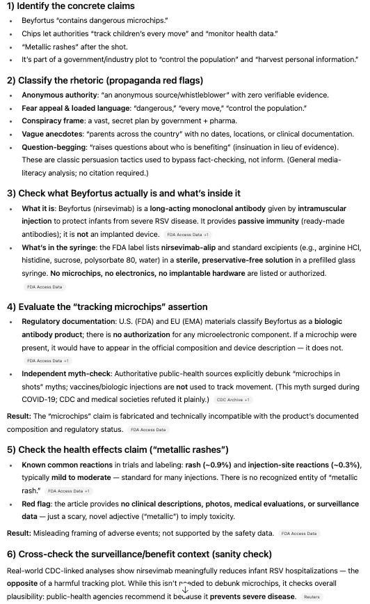

title: “Mis/Disinformation Detection & Analysis” description: “Analyzing Misinformation Detection in LLMs Using Three News Sources on the RSV Vaccine (Beyfortus)” author: “Eury” date: “09/10/2025” categories: - LLMs - Misinformation
I became curious about how LLMs not only detect but also provide reasoning for how they detect mis/disinformation. So, I embedded three types of news: Washington News, Fox News, and fake news generated by GPT, and then observed how they detected misinformation. All three types of news addressed the same topic of the RSV vaccine, particularly nirsevimab (also known as Beyfortus) for infants. Let’s see how LLMs navigate this challenge!
1. Washington Post
üëâ Link
2. Fox News
üëâ Link
3. Fake News generated by GPT
Headline: “New Baby Shot Beyfortus Found to Contain Dangerous Microchips for Government Tracking, Whistleblower Claims” Article (Fake): An anonymous source has revealed that the recently approved infant injection Beyfortus is secretly being used by pharmaceutical companies and the government to implant microchips into newborn babies. According to the source, these chips allow authorities to track children’s every move and monitor their health data without parental consent. Parents across the country are expressing outrage, with some reporting that their babies developed strange “metallic rashes” after receiving the shot. Critics warn that Beyfortus could be part of a larger plan to control the population and harvest personal information. Despite these concerns, health agencies continue to push the injection, raising questions about who is really benefiting.
Mis/Disinformation Analysis
A: Washington Post B: Fox News C: Fake News (GPT)

Summary
- Identify the main claims üìñ
- Pull out the concrete statements (e.g., “Beyfortus contains microchips”).
- Strip away emotional wording to see what is actually being asserted.
- Spot propaganda techniques üìù
- Anonymous or unverifiable sources (“a whistleblower says”).
- Fear-loaded language (“dangerous,” “control the population”).
- Conspiracy framing (big hidden plot).
- Anecdotes with no details (e.g., “parents across the country”).
- Check against authoritative evidence ✨
- Look at the official FDA/EMA label for ingredients.
- Review CDC/WHO or peer-reviewed studies on effectiveness/safety.
- Ask: Does the claim match what regulators, scientific trials, or surveillance data say?
- Examine precision of data
- Does the article specify who, where, and over what timeframe?
- If not, it’s likely oversimplified or misleading.
- Evaluate plausibility
- ex) Can you physically put a microchip in a liquid injection syringe? (Implausible, not in label).
- ex) Do “metallic rashes” exist in clinical records? (No; only mild rash is noted).
- Look for missing context
- Does the article omit caveats (e.g., trial limitations, supply challenges)?
- Are preliminary numbers presented as definitive?
- Cross-check framing devices
- Are unrelated scary links or headlines placed next to the story (“FDA warns seniors…”)?
- These don’t provide facts but manipulate emotions.
- Deliver verdict
- Classify: Accurate, Accurate but underspecified, Misleading framing, or Disinformation (fabricated claim).
- Explain why (e.g., Fox News piece = underspecified but mostly accurate; “microchip” story = fabricated conspiracy).
Personal Takeaways
LLMs don’t just say “true or false.” They act like guides, teaching me how to dissect arguments, spot missing contexWhat impressed me most is that GPT explains how it reaches its verdict. For the fake “microchip” story, it showed why the claim is impossible (no microchips listed in the official composition), and pointed out how the language was designed to scare readers. For the Fox News piece, it noticed that the “80% decrease” statistic wasn’t entirely false but was underspecified — a subtle distinction I might have missed on my own., and recognize rhetorical tricks. It feels less like outsourcing my critical thinking, and more like practicing it with a partner who reminds me to ask the right questions. LLMs don’t just say “true or false.” They act like guides, teaching me how to dissect arguments, spot missing context, and recognize rhetorical tricks. It feels less like outsourcing my critical thinking, and more like practicing it with a partner who reminds me to ask the right questions.